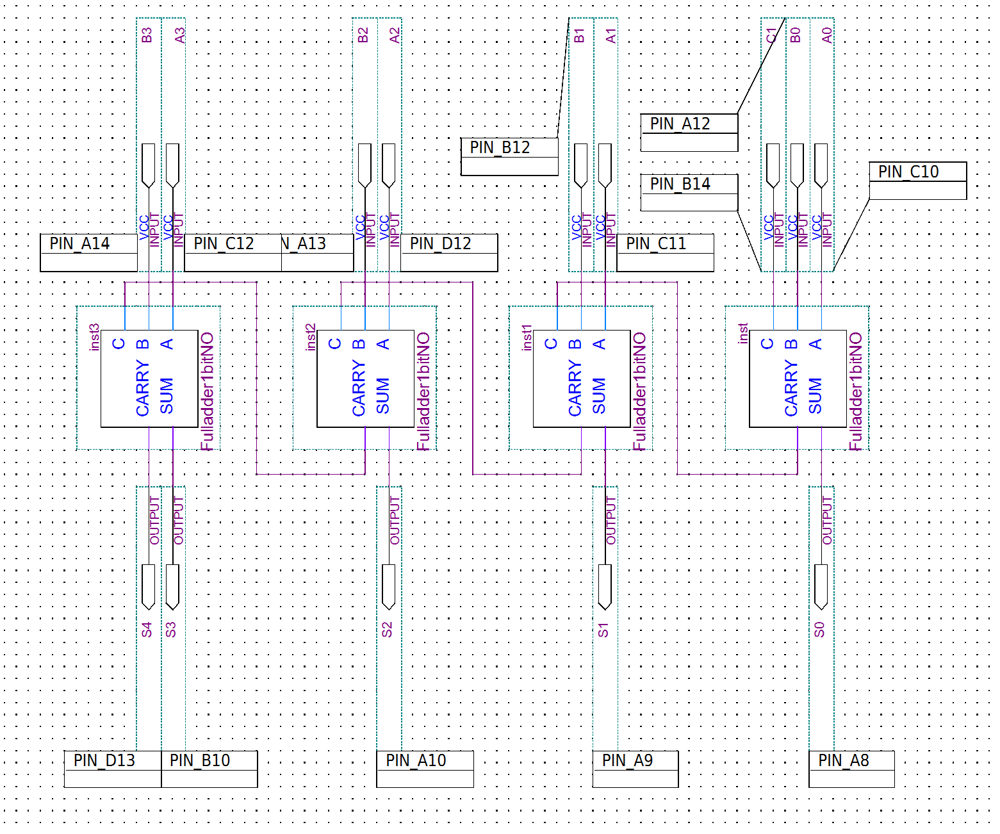
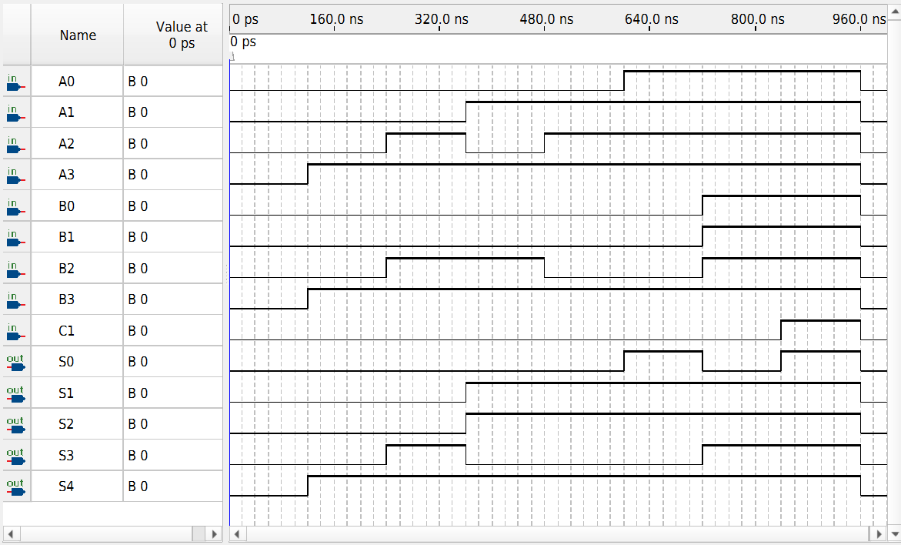

FPGA / DIGITAL LOGIC
4-Bit Ripple-Carry Full Adder
A 4-bit binary adder constructed from four reusable 1-bit full-adder blocks and functionally verified in Intel/Altera Quartus Prime.
OVERVIEW
4-Bit Binary Addition
This project extends the previously implemented 1-bit full adder into a 4-bit ripple-carry architecture capable of adding two 4-bit binary values and an external carry-in.
Four 1-bit full-adder blocks are connected in sequence. The carry output from each stage is passed into the carry input of the next stage, allowing carries to propagate across the complete 4-bit word.
The original coursework project was recovered, reorganized, recompiled in Quartus Prime Lite 25.1, and functionally simulated again for portfolio verification.
DESIGN
Ripple-Carry Architecture
Inputs A0–A3 and B0–B3 represent the two 4-bit operands. C1 serves as the external carry-in.
The least-significant stage computes S0 and passes its carry into the next full-adder stage. This process continues through all four stages, with S4 representing the final carry-out.

SIGNALS
Inputs & Outputs
| Signal | Purpose |
|---|---|
| A0–A3 | 4-bit operand A |
| B0–B3 | 4-bit operand B |
| C1 | External carry-in |
| S0–S3 | 4-bit sum |
| S4 | Final carry-out |
VERIFICATION
Functional Simulation
Functional verification was performed using the Quartus Simulation Waveform Editor with representative addition and carry-propagation test cases.
The simulation demonstrates correct behavior across both ordinary additions and cases that require propagation of carries through multiple stages.
For example, with A = 1111, B = 1111, and carry-in = 0, the output is 11110, corresponding to decimal 30.
When the carry-in is set to 1 for the same operands, the output becomes 11111, corresponding to decimal 31.

RESULTS
Verified Operation
TOOLS